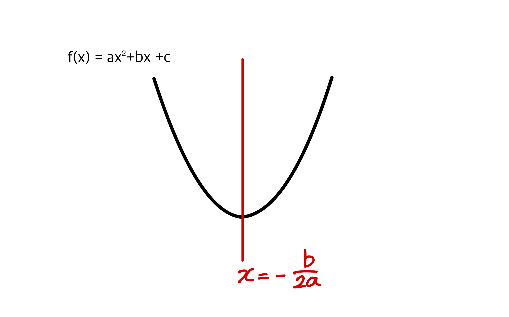
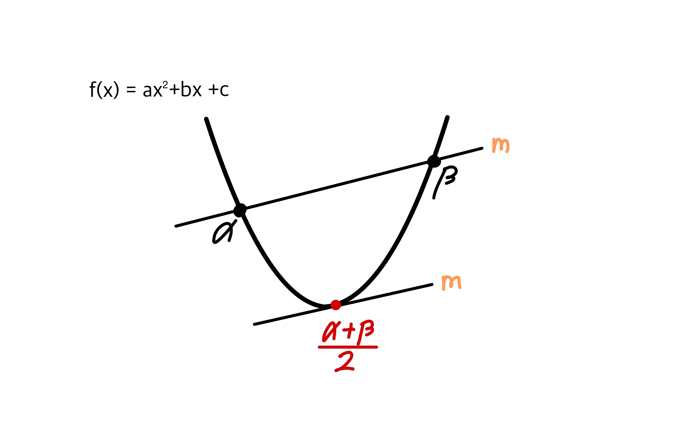
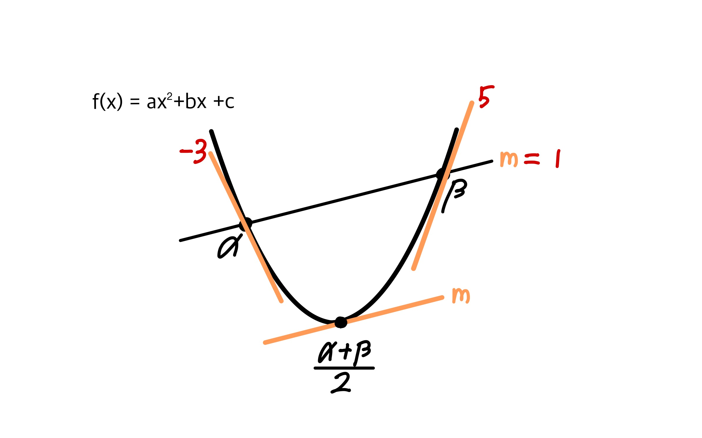

이차함수는 $ x = \frac{-b}{2a} $에 대하여 선대칭이다.

$x$좌표인 $α,β$에서 이차함수를 지나는 기울기가 $m$인 직선과 같은 기울기를 가진 이차함수의 접선의 $x$좌표는 $α$와 $β$의 중점인 $\frac{α+β}{2} $ 이다.


이차함수의 도함수는 일차함수이므로 등차수열인 $ax+b$의 형태를 가진다.
기울기가 m=1인 직선이 이차함수를 지나고 교점을 $α, β$라고 할 때, $α$에서의 기울기를 $-3$이라 하면, $β$에서의 기울기는 $5$이다.
설명) $α$에서의 기울기는 $–3, \frac{α+β}{2} $에서의 기울기는 $1$이고 $α$,$ \frac{α+β}{2} $ , $β$ 는 일정한 간격을 가지므로 세 점에서의 기울기는 등차수열의 관계를 가진다.
예시) 이차함수 $f(x)$와 직선의 교점을 $a,b$라고 하면 $f’(a)=4$, $f’(b)=-7$일 때 직선과 같은 기울기를 갖는 이차함수 위의 점에서의 기울기는 $ \frac {4+(-7)}{2} = -\frac{3}{2} $ 이다.

증명은 [챕터 - 넓이공식에서 나옴.]